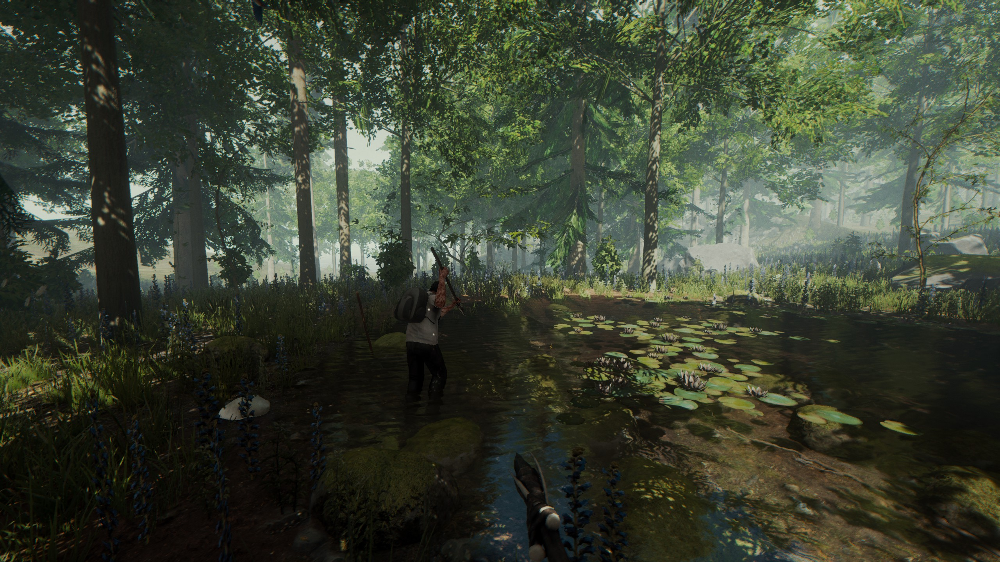
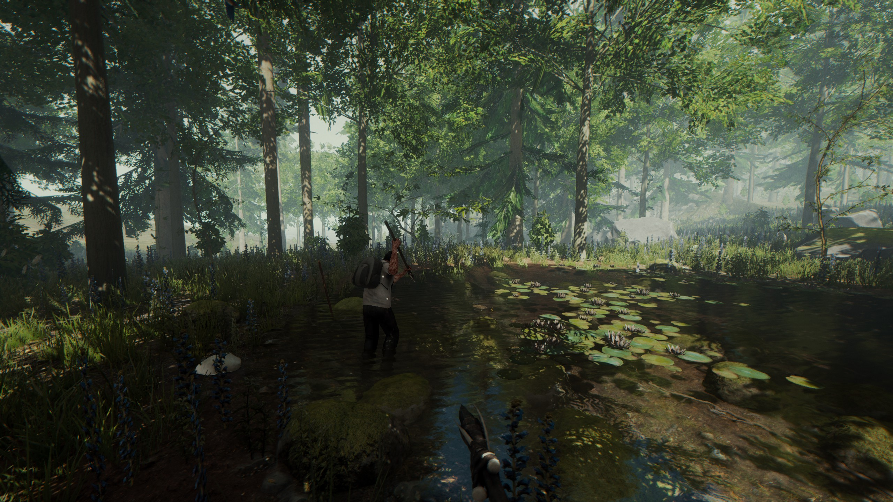

오늘은 어떤 게임을 할까?
오늘은 어떤 게임을 할까?Don't starve

플레이어는 무작위로 생성된 맵을 탐험하며 오랫동안 살아남는 것을 목표로 한다.
다양한 몬스터와 전투를 하고, 농사를 짓거나, 가보지 못한 장소를 탐험하자.
플레이어가 사망 시 게임 오버되며 처음부터 다시 시작해야 한다.
경험치를 축척하거나 모드를 사용하면 특별한 능력을 가진 캐릭터로 플레이할 수도 있다.
멀티플레이는 따로 <Don't Starve Together>를 구매해야 가능하니 참고하자.

 
